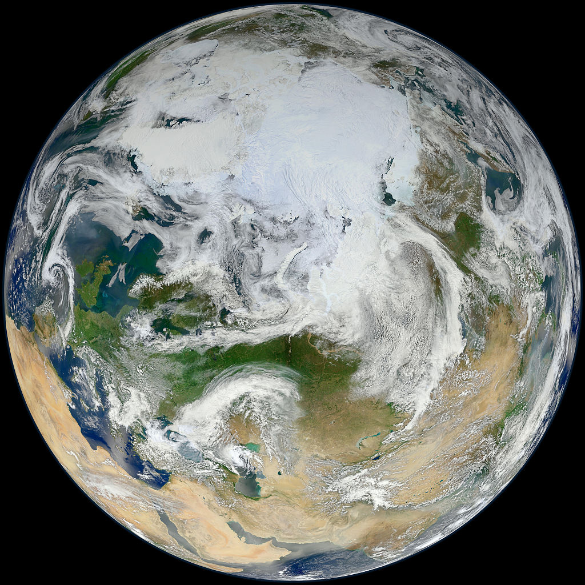
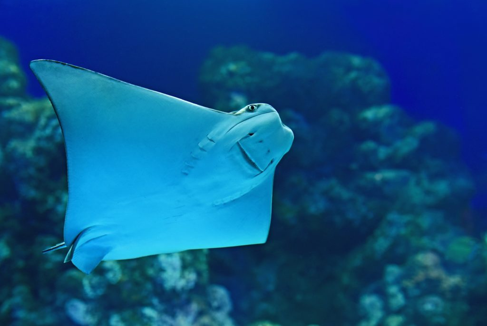

Climate Change

Our World
“Although two thirds of our planet is water, we face an acute water shortage. The water crisis is the most pervasive , most severe, and most invisible dimension of the ecological devastation of the earth.” Water Wars: Fight to the Last Drop
(South End Press, 2002)
Link
The deep sea

Famous quotes:
“When I look into the eyes of an animal, I do not see an animal. I see a living being. I see a friend. I feel a soul.” Anthony Douglas William
“The idea that some lives matter less is the root of all that is wrong in the world.” Dr. Paul Farmer
LINK
Test yourself below, if you have the courage
Related Links
Take a Test